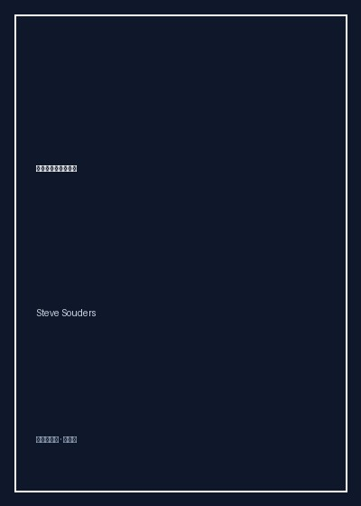

《高性能网站建设指南》

总体观点
索德斯提出了震撼整个互联网软件工业的‘前端性能黄金法则（The Performance Golden Rule）’：‘只有10%至20%的最终用户响应时间耗费在后端服务器生成HTML页面上，剩下的80%至90%的时间全部耗费在前端组件（图片、样式表、脚本、Flash）的下载、解析与渲染过程中’。传统工程师盲目优化后端数据库查询与Java/C++编译代码，往往是在那10%的微小空间里苦战；而真正能带来立竿见影数倍提速的蓝海，全在前端基础设施层。
减少HTTP请求次数是前端性能优化的第一铁律。在HTTP/1.x协议下，浏览器的并发连接数极其有限，每一次建立TCP握手与发送请求头部都伴随着高昂的网络延迟与往返时延（RTT）。通过使用CSS Sprites合并图片、内联Data URI、合并JS/CSS外链文件并使用脚本按需打包，能够将数十次琐碎请求瞬间缩减为个位数，成倍提升关键渲染路径上的首屏展现速度。
充分榨干客户端缓存与传输压缩是构筑极致性能的坚固壁垒。通过设置遥远的未来过期时间（Expires / Cache-Control: max-age），结合在静态资源文件名中注入内容哈希版本号（Cache Busting），实现‘只要文件未改动，用户每次刷新直接读取本地磁盘缓存毫秒级呈现’；同时对所有文本资产开启Gzip压缩、使用CDN将内容分发至离用户最近的地理边缘节点，构成了现代工业级Web性能工程的基石。
核心观点
-
1. 黄金法则：80/20原则颠覆传统性能认知
索德斯利用YSlow工具对全美排名前十的巨型门户（Yahoo、Google、Amazon、CNN）进行深度网络瀑布图剖析，实测数据证明：后端接口耗时通常在200毫秒内，而页面加载完成总时长高达2秒以上，前端组件下载占据了整整80%以上的绝对大头。
Yahoo!主页案例分析：即便将后端PHP执行时间从200ms优化至100ms（耗费数月重构数据库），用户感知仅提升5%；而仅仅合并两个JS脚本与开启CSS雪碧图，整站加载时间瞬间缩短1整秒（提升50%）。 -
2. 将样式表放在顶部与脚本放在底部
将CSS放在`<head>`顶部能让浏览器尽早构建CSSOM并实现‘逐步渲染’，避免页面长时间白屏或出现文字未加载样式的丑陋闪烁（FOUC）；而将`<script>`脚本放在`</body>`底部，是因为传统同步脚本下载和执行会阻塞页面所有后续DOM渲染与并行资源下载。
对比实验：将一段庞大复杂的统计脚本放在页面顶部，即使HTML已下载完毕，浏览器依然陷入完全白屏假死状态直到脚本下载执行完毕；移至页面最末尾后，用户在第300毫秒便看到了完整正文内容。 -
3. 添加Expires头与文件名哈希指纹
为图片、CSS和JS组件设置长达一年的`Expires: Thu, 31 Dec 2037`超远过期时间，让浏览器在后续访问中彻底避免发起条件请求（304 Not Modified）；而当代码需要发布更新时，通过自动化流水线在文件名后添加版本号（如`app.v2.js`）瞬间强制穿透缓存更新。
Yahoo!邮件系统的用户在首次访问下载了所有静态脚本后，后续数月内的所有点击切换，近90%的静态资源全部命中浏览器Memory/Disk Cache零秒读取，服务器负载暴降70%。 -
4. 利用CDN内容分发网络消除物理延迟
光纤中的信号传输受限于光速与物理距离，从北京访问位于加州的服务器单程RTT高达150毫秒，来回数次握手便耗费近1秒。CDN将静态资源分布式缓存在全球成百上千个边缘PoP节点，让用户直接就近连接本地机房，将物理时延压缩至极限。
跨国电商网站接入Akamai CDN后，欧洲与亚洲用户的首屏静态图片加载耗时直接从原先的3秒断崖式下跌至300毫秒以内，用户跳出率降低了整整18%。 -
5. 使用无Cookie域名托管静态资产
当用户向主域名发送请求时，浏览器会自动在HTTP请求头中附带所有的Cookie凭证（往往达到数KB）。对于纯粹的图片、CSS和JS等静态文件，Cookie完全无用且白白消耗上行带宽。使用独立静态域名（如`static.foo.com`）可以实现完全零Cookie轻量化传输。
大型社交网站一个页面包含80张好友小头像：如果使用主域名，每次刷新页面仅上传无用的Cookie头部就产生数百KB的上行数据浪费；迁移至独立Cookie-Free静态图片CDN后，移动网络加载延迟显著降低。
全书结构
-
第1章 卓越性能的黄金法则
建立全书核心问题意识，提出前端响应时间占80%-90%的黄金法则，引入网络瀑布图（Waterfall Chart）与YSlow量化评测工具。
详细对比拨号网络与宽带环境下各大网站的网络请求阶段分解图，直观展示DNS解析、TCP连接与内容传输的时长分布。 -
第2-5章 规则1至规则4：请求削减与网络加速
规则1减少HTTP请求（Sprites/内联）、规则2使用内容分发网络（CDN）、规则3添加Expires头、规则4压缩组件（Gzip）。
深入拆解Gzip压缩算法在文本CSS/JS文件上的惊人效果，通常能将未压缩的100KB脚本文件瞬间缩减至25KB，网络传输提速4倍。 -
第6-9章 规则5至规则8：渲染阻塞与解析优化
规则5将样式表放在顶部、规则6将脚本放在底部、规则7避免CSS表达式（Expression）、规则8使用外部JavaScript和CSS。
批判IE私有CSS表达式`expression(document.body.clientWidth)`在鼠标移动与滚动时每秒触发数千次计算导致CPU瞬间飙满卡死的惨痛案例。 -
第10-14章 规则9至规则14：高级连接与传输细则
规则9减少DNS查找、规则10精简JavaScript（Minify）、规则11避免重定向（Redirects）、规则12删除重复脚本、规则13配置ETag、规则14使Ajax可缓存。
剖析301/302重定向对用户体验的隐形重创：由于在收到重定向目标前浏览器完全空白等待，一次多余的重定向白白浪费两百毫秒黄金首屏时间。 -
第15章 析构全美十大主流网站
全景实战检阅，逐一用14条规则给Amazon、eBay、Google、Yahoo、MySpace打分体检，展示优化理论在大型复杂系统中的落地全貌。
对亚马逊网站进行完整YSlow诊断评分，指出其在ETag默认配置与图片域名无Cookie剥离上的失分点，并给出量化优化收益预估。